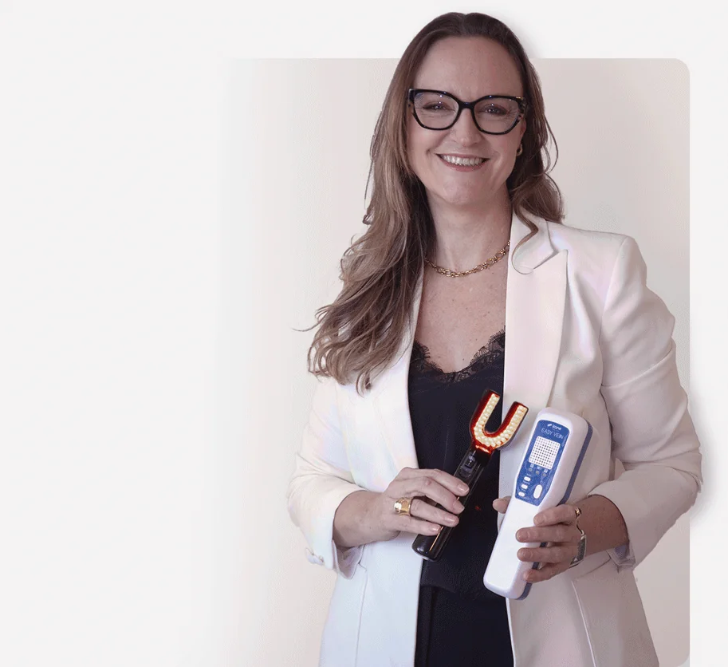
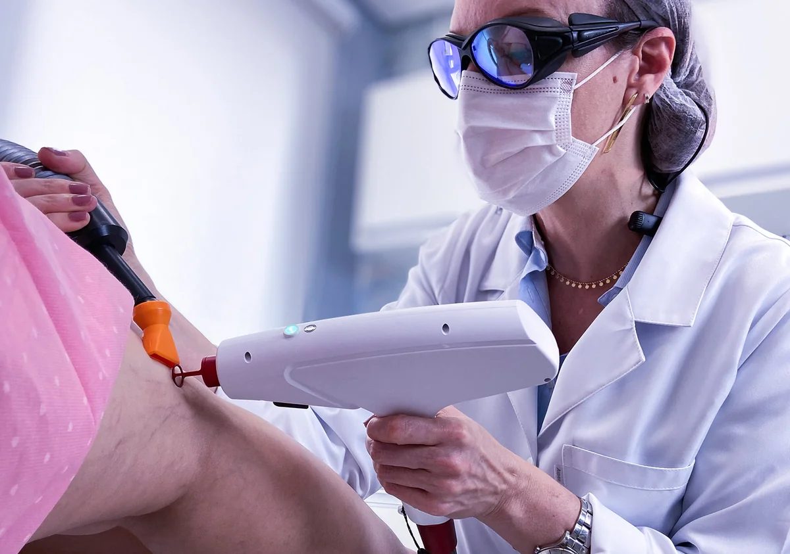
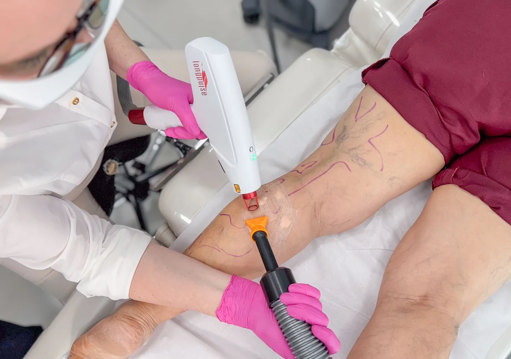
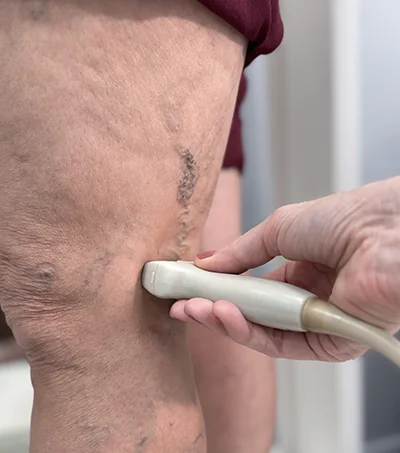
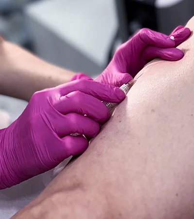
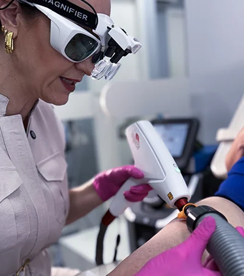

Cirurgiã Vascular com título pela SBACV, residência pela UNESP e mais de 25 anos dedicados exclusivamente à saúde vascular. Atendo varizes, vasinhos e insuficiência venosa com diagnóstico por Doppler e indicação individualizada para cada caso.
Comecei minha carreira em 1999, depois da graduação na Universidade Estadual de Londrina e da residência em Cirurgia Geral e Cirurgia Vascular pela UNESP. Desde então, a saúde vascular é meu único foco. Não existe desvio; é só aprofundamento.
Minha prática tem uma lógica que não muda: o Doppler venoso vem antes de qualquer decisão terapêutica. Ele me permite enxergar o que não aparece na pele, identificar onde as válvulas estão falhando e entender se o problema é isolado ou parte de uma insuficiência venosa mais ampla. Sem esse diagnóstico, qualquer tratamento é tentativa.
Quando o caso exige ambiente hospitalar, atendo em referências como o Hospital Israelita Albert Einstein, o Sírio-Libanês e o Oswaldo Cruz. Isso não é detalhe. É a garantia de que o tratamento, seja ele minimamente invasivo ou cirúrgico, acontece com a estrutura que cada situação exige.
Formação médica com base sólida em ciências clínicas e cirúrgicas.
Universidade Estadual de Londrina (UEL) · 1999
Residência em Cirurgia Vascular e Angiologia em hospital de referência; com formação completa em diagnóstico e tratamento de doenças vasculares periféricas.
Universidade Estadual Paulista · UNESP
Especialização em procedimentos estéticos vasculares — escleroterapia, laser endovenoso e microcirurgia de varizes.
Sociedade Brasileira de Angiologia e Cirurgia Vascular (SBACV) · Associação Médica Brasileira
Habilita procedimentos minimamente invasivos guiados por ultrassom e imagem — como o laser endovenoso e a escleroterapia com espuma guiada por Doppler.
Atendimento no Bairro Jardim, atendendo toda a Região do ABC Paulista. Credenciada em 7 hospitais de referência da Grande São Paulo, incluindo Albert Einstein, Sírio-Libanês e Oswaldo Cruz.






Tratar varizes com quem opera, diagnostica e acompanha não é o mesmo que fazer uma aplicação numa clínica de estética. A diferença está no que vem antes do procedimento.
Utilizo equipamentos modernos de diagnóstico por imagem para identificar o tipo e a extensão das varizes, garantindo a indicação do tratamento mais adequado.
O Doppler venoso revela o que não aparece na pele: refluxo, válvulas com falha, veias nutridoras que estão alimentando o problema. Sem esse exame, não existe diagnóstico. Sem diagnóstico, não existe indicação correta.
Dedico tempo para ouvir cada paciente, entender suas queixas e expectativas. O tratamento é sempre individualizado, respeitando a singularidade do código venoso.
Cada veia tem um calibre, uma localização e uma causa. A técnica usada no vasinho de uma paciente pode ser completamente diferente da usada em outra. Quem define a indicação é a avaliação clínica, não o procedimento mais procurado.
Formação contínua e participação em congressos internacionais garantem que meus pacientes tenham acesso às técnicas mais modernas e seguras disponíveis na medicina vascular.
Da escleroterapia com laser ao laser endovenoso e à cirurgia convencional — tenho habilitação para todos os níveis de complexidade. O paciente não precisa ser encaminhado quando o caso avança; o acompanhamento é contínuo.